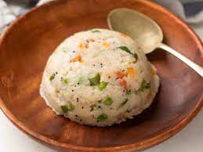

Upma!!

Description
Masala Dosa, also called Masale dosey, is a South Indian dish. It is a type of dosa and has its origin in the town of Udupi in Karnataka. It is made from rice, lentils, Urad dal, Chana dal, fenugreek, puffed rice, Toor dal, dry red chilli and served with potato curry, chutneys, and sambar.
Ingredients
- 2 tbsp oil
- ¾ tsp mustard
- 1 tsp cumin
- 1 tsp urad dal
- 1 tsp chana dal
- 1 dried red chilli
- few curry leaves
- 1 inch ginger, finely chopped
- 1 cup rava / semolina, coarse
Steps
- firstly, in a large kadai heat 2 tbsp oil. splutter ¾ tsp mustard, 1 tsp cumin, 1 tsp urad dal, 1 tsp chana dal, 1 dried red chilli and few curry leaves.
- add ½ onion, 1 inch ginger, 2 chilli and ½ tsp salt.
- saute until the onions soften slightly.
- cover and simmer for 2 minutes or until the rava absorb all the water.
- add 1 tsp ghee, ½ lemon juice and 2 tbsp coriander. mix well.
Return to Home page